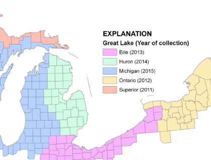

Geospatial Information for Decision Support in AOCs and Ecosystems
Template #83

Geospatial information is the cornerstone of effective restoration and ecosystem management at the regional level. Of the Great Lakes, the Lake Erie watershed is the closest to achieving complete LiDAR coverage of the watershed. One particular opportunity within the Lake Erie watershed is the Huron-Erie Corridor (HEC), which includes the St. Clair River, Lake St. Clair, and the Detroit River, is a major multi-use waterway, involving commercial shipping, recreational boating, the international wildlife refuge, and intakes for the Detroit Water and Sewer Department, which provides drinking water to almost 5 million people in Detroit and surrounding communities. The HEC is also the site of major industrial development (chemical plants near Sarnia, Rouge Plant, Zug Island), 5 Areas of Concern, and rapid land use and land cover change. In addition to the ecological concerns, the HEC is also an international border, the site of significant smuggling activities, and home to the Fermi nuclear plant.
Currently no high resolution elevation data exists for the majority of this region, including the entirety of St. Clair, Macomb, and Monroe Counties, Michigan. Completing coverage of these counties will assist in developing a masterplan for the St. Clair River and Lake St. Clair, as well as provide much better understanding of watershed processes conveying point- and non-point source materials to the HEC.
Beyond the HEC, several upland counties in Michigan and Indiana also need to be completed to make basin-wide analyses feasible.
This project will support multiple Federal, State, and local data needs for ecology, restoration, planning, and public safety.
Complete LiDAR coverage for the Huron-Erie Corridor. Depending on funds actually available or obtained through partnerships, expand to finish the Lake Erie watershed. Make all of this data available to scientists, managers, State/County/Local agencies, and the general public.
LiDAR is a critical data need for many Federal, State, and local agencies, as well as environmental managers and researchers. Much of the elevation data in the Great Lakes, and within the western Lake Erie watershed, is more than 30 years old. In regions of modest relief, such as the lake plains of Monroe and Macomb County, MI, the existing 30m DEM and 10ft contours are both outdated and lack sufficient detail to identify areas of current or potential wetlands, develop restoration and management plans, or even delineate watersheds reliably. Further, the additional derivative products of the LiDAR, including land cover, canopy height, and biomass, among others, provide useful information for restoration.
Large, consolidated purchases through established contract vehicles minimizes the data cost per unit area, while assuring a high level of standardization and compatibility. The USGS has been a leader in this field for two decades, and has ongoing relationships with partners flying areas ranging in size from individual counties to the state of Iowa.
Working with county governments, the State of Michigan, and other Federal Agencies, particularly the U.S. Army Corps of Engineers (USACE) and National Oceanic and Atmospheric Administration (NOAA), the U.S. Geological Survey will endeavor to acquire high-resolution elevation and LiDAR point-cloud data for (in order of priority): Macomb County, St. Clair County, and Monroe County, Michigan. Data will be acquired based on a standard USGS specification requiring 2 meter maximum sample spacing, 15cm maximum vertical error, as well as several interpreted products (full specification attached).
The contract will be handled by the USGS National Geospatial Technical Operations Center (NGTOC) Commercial Partnerships Team (CPT) based in Rolla Missouri. The NGTOC will be reimbursed at a rate of between 5 and 10% for labor associated with contract management, administration, and QA/QC of the products.
The rapidly deteriorating budget situation for local governments in Southeast Michigan has called into question the availability of local matching funds. In the absence of local matching funds, data sharing agreements will be negotiated with the counties to make locally maintained geospatial data available to scientists and the general public. Priority will be given first to HEC counties, then counties contributing to the HEC, and finally other counties in the Lake Erie Basin that have not been flown.
Highest priority: Macomb1,2, St. Clair2, Monroe Counties2, MI
Second Priority: Sanilac, Lapeer, Livingston2, Lenawee, and Hillsdale
Counties, MI
Third Priority: Adams, Allen, DeKalb, Wells, and Steuben, IN
1 - Macomb County has committed matching funds toward developing an
improved product.
2 - The SEMCOG Counties may acquire LiDAR as part of the ARRA Geospatial
Stimulus program. If so, this will allow better coverage of the 2nd and 3rd
priority areas.
In terms of planning and managing the project, communications will be primarily between USGS Liaisons and county partners, or Federal partners.
The Federal collaborators on the 2011 remote sensing plan have developed a white paper for GLNPO. This white paper has been provided for review and comment, and will likely be revised to address concerns or comments GLNPO may have. The intent of that document is explain both the GLNPO and to watchdog groups the different remote sensing technologies being employed in several templates, and express how these various efforts complement each other, rather than compete.
A fact sheet will be developed in conjunction with the EROS Data Center based on data for Wayne Co, MI (about to be delivered 12/2009) illustrating the improvements possible in watershed delineation, hydrologic routing, and land cover classification based on LiDAR, as well as examples of several additional analyses, such as cut-fill, canopy closure, and biomass estimates.
Following production of the data, in conjunction with partnering local and regional agencies, we can do a press release and a demonstration of identifying a wetland based on the LiDAR and imagery (from a separate funding source) we will be partnering on in the Detroit area. The biggest opportunity may not be until 2011, when new topographic maps will be produced with the new data.
Point of Contact:
Steve Aichele
(517)887-8918
saichele@usgs.gov